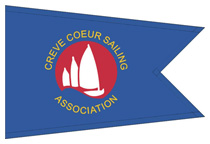

The CCSA Race Committee is assigned from the membership role and is an essential part of the CCSA Community. Race Committee duties are part of the requirement of each person’s membership in the CCSA. It is generally voluntary in nature but there are requirements on the Race Committee that must be met by the volunteers.
The Race Committee Coordination will be performed by the Vice Commodore for 2014. The scope of responsibilities of the Race Committee individual members depends largely on what position they are filling.
The Race Committee is broken into two parts, with some overlapping areas of responsibility.
Wet Race will be responsible for setting up the Race Course. Dry Race will be responsible for the actual running of the day’s functions, with an oversight on safety of on-the-water participants, as well as safety ashore and on the boat-ramp.
This year, the CCSA will be using the C-Dory full-time as an on-the-water Race Committee boat. It will be manned full-time by a boat-captain and a member of the Dry Race Committee. The C-Dory will be underway at all times during racing with the boat captain and race committee crew aboard. Additional personnel may be aboard the C-Dory, but may not assume the duties or interfere with the duties of the captain and crew, without approval from the senior Race Committee official or one of the Officers of the CCSA. The Wet Race Committee may fill the functions of the C-Dory Boat Captain.
DRY RACE COMMITTEE
Four members assigned from the regular membership, capable of supporting the Dry Race Desk functions. One of the assigned four members should be capable of towing the Race Trailer (C-Dory) to the Ramp Area.At least one of the four members must be a qualified or CCSA-seasoned and experienced Sailor, who is the "in-charge" of Race Desk.
One of the remaining three members will be assigned to perform the combined duties of Ramp Master (for Ramp Safety prior-to and following racing activities) and C-Dory crew. This member must in general be capable of safe-practice decisions to help reduce the potential for injury at the Boat Ramp, and be capable of assisting the boat captain afloat.
The Race Committee will be in constant communication with the C-Dory boat captain, and if applicable, the Wet Race Committee. Handheld radios will be the primary form of communication.
WET RACE COMMITTEE
One member assigned by the Board, will perform the Wet Race functions of setting the course and evaluating the course on-the-water, proposing changes if the situation develops. The Wet Race Committee member may be a race participant or serving as C-Dory Boat Captain. The Wet Race Committee member will be responsible for setting the marks and may serve as boat captain for that purpose. The Wet Race Committee member may remain in communication with the Dry Race through the Race Day.BOAT CAPTAIN
This is a new duty to the CCSA and a continual work-in-progress during the next year for evaluation on viability of the C-Dory.The Boat Captain is responsible for the launching, operation and end-of-day recovery of the C-Dory. The Launching and recovery of the C-Dory may be delegated to the Race Committee member who was assigned to the task of towing the trailer, but the C-Dory captain is responsible for the vessel launch into the water and recovery from the water.
The Boat Captain is the senior on-board the C-Dory and is to ensure that the C-Dory remains focused on the race course for Safety purposes.
The Boat Captain will remain in constant communication with the ashore Race Committee via handheld radio.
RAMP MASTER
The Ramp Master is the Ramp Safety Coordinator. The greatest safety time-frame is during the mid-day launching and recovery of all sailboats, while the lake is at its peak activity time.The Ramp Master is part of the Race Committee, assigned in the dual role of supporting the conduct of the CCSA on the boat ramp, and also pulling duty as the crew aboard the C-Dory at five minutes prior to the first pre-start warning. As all craft should be launched prior to that point, the needs of the Ramp Master are reduced.
The C-Dory crew should be returned to shore as soon as possible at the end of the racing day to direct traffic as needed; the Boat Captain can retrieve the marks without additional assistance.
The Ramp Master is in general, a safety coordinator for Sailors launching their boats. The Ramp Master is not responsible for the actual launch or recovery of the sailboats and should not be participating in that effort (a hands-off approach, except in extremis!). The primary focus of the Ramp Master is should be Safety on the Ramp. The Ramp Master will direct vehicle traffic flow in the Ramp Area, to ensure that other users of the Park in the right-of-way are observing vehicles backing and leaving the Ramp, and supporting safe ramp operations. All CCSA members should obey the directions of the Ramp Master, and if necessary or requested, assist the Ramp Master.
The Ramp Master will be wearing a Safety Vest clearly identifying the Ramp Master’s function.
Training of the Race Committee, Boat Captain and Ramp Master
Training of the Race Committee members, the Boat Captain and Ramp Master will be conducted as necessary. Everyone’s support of this is requested and appreciated. The training programs are still in development.
Race Day Evolutions and Times
TIMES
All members of the Dry Race Committee will need to be at the Lake for the entire duration of the Set-Up, Racing and End-of-Day events. All members of the Dry Race Committee need to be at the Lake no later than 12:30 pm — generally, it takes roughly forty-five minutes to set up the Racing Area, forty-five minutes of C-Dory pre-launch time, forty-five minutes of C-Dory recovery time after all marks are retrieved. Competitors start arriving en-force around 12:30pm; all Safety barriers, cones, and tapes must be set up at that time.EVOLUTIONS
The Dry Race Committee is responsible for the following evolutions.
- Race Area set-up
- Unloading the C-Dory
- Trailer parking area safety cones, tapes, barriers
- Side-walk safety cones
- Race Desk
- Race Desk shelter if applicable
- CCSA banners
- Placing the Race Marks and anchors where the Boat Captain can easily reach
- Race Desk
- Setting out the Race Desk materials
- Sign-in registration sheet
- Race Scoring sheets
- Loud Hailer
- Signals horns and test
- Handheld radio tests with Boat Captain, Wet Race Committee
- Setting up the Signals stanchions
- Setting up the Signals flag
- Setting up and testing the race timers
- Breaking out the Sailing Instructions Binder for Competitors review
- Posting the Notice to Competitors Board where it can be seen by Competitors when they register.
- Race Conduct
- Requires three members
- All four Dry Race Committee sign the Score Sheet to count towards required participation statistics.
- Senior Race Desk person responsible for the overall operation
- One Timing Official for the Start
- One Signals Person for the Start (flags)
- One Signals Person for the race (horn).
- Timing Official will call out the time of finishers
- Signals Person (flags) will record the sail number and time of finishers
- Signals Person (horn) will call out the sail number of the finisher.
- Senior Race Desk person should be observing the entire race course throughout the race, watching for vessels in distress, and communicating with the C-Dory Boat Captain as necessary.
- Focus of the Dry Race Committee should necessarily be on the Racing, but also be able to act in a public relations role, on a not-to-interfere-with-racing basis.
- End-of-Day Wrap up
- Strike down the shelter and Race Desk implements, position them for stowage in the C-Dory when it returns from marks retrieval.
- Deliver the Race Results to the Race Scoring Official or designate.
- Strike down the Safety equipment for the trailer parking area after the majority of boats have been recovered and stowed. Do not take down the safety cones, tapes or barriers if significant derigging efforts are still in progress.
- Assist the Boat Captain in recovering the C-Dory and stowing all the materials according to the Stowage Plan.
NOTE: The Dry Race Committee ashore may need to step in to perform the duties of the Ramp Master if there is significant activity on the Ramp, but the C-Dory is still engaged with activities on the course. Typically, late-afternoon Park participants is lower than during the mid-day, however, our Sailors are tired and more likely to overlook important events.
The Dry Race Committee is relieved when the C-Dory is recovered on the trailer and all items are stowed aboard the C-Dory.